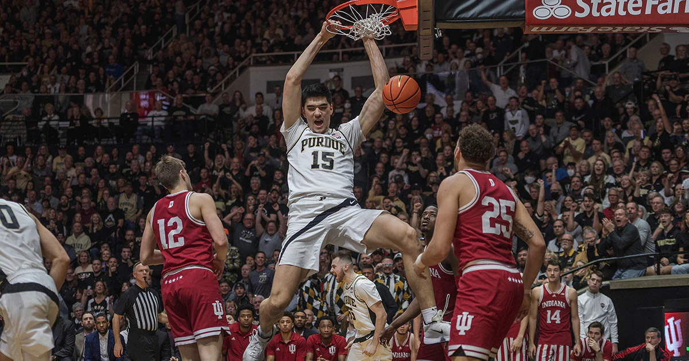

Position: Center
Height/weight: 7'4/ 290 lbs
The 2022-23 National Player of the Year will return to the Purdue Boilermakers after being stunned by FDU in the first round of the NCAA tournament. The 7 foot 4 center dominated college basketball last season leading Purdue to a 29-6 season. Purdue won the Big 10 tournament and also earned themselves a 1 seed in last years NCAA tournament. Leading the Boilermakers in points and rebounds with 22.3 points and 12.9 rebounds, Edey and head coach Matt Painter look to reload for a successful 2023-24 campaign.

Position: Center
Height/weight: 7'1/ 260 lbs
Former Michigan basketball star Hunter Dickinson was wildly known as the top transfer portal recruit in this years offseason and he ended up chosing Kansas as his landing spot. In interviews Dickinson stated that NIL deals had a big factor on his decision. In his three seasons with the Wolverines, Dickinson was named to the All-Big Ten team three times. He placed fourth in the league in points, rebounds, and blocks per game as a junior in 2022–23 with an average of 18.5 points and 9.0 rebounds per game.
Position: Center
Height/weight: 7'0/ 230 lbs
Freshman standout and now returing leader of a talented Duke squad looks to make a big jump this year after choosing not to go to the 2023 NBA draft. The ACC Rookie of the year averaged 15.1 points and 8.9 rebounds last year. After undergoing hip surgery this offseason Filipowski says he feels stronger this year so be ready for a Duke star this season.

Position: Forward
Height/weight: 6'10/ 240 lbs